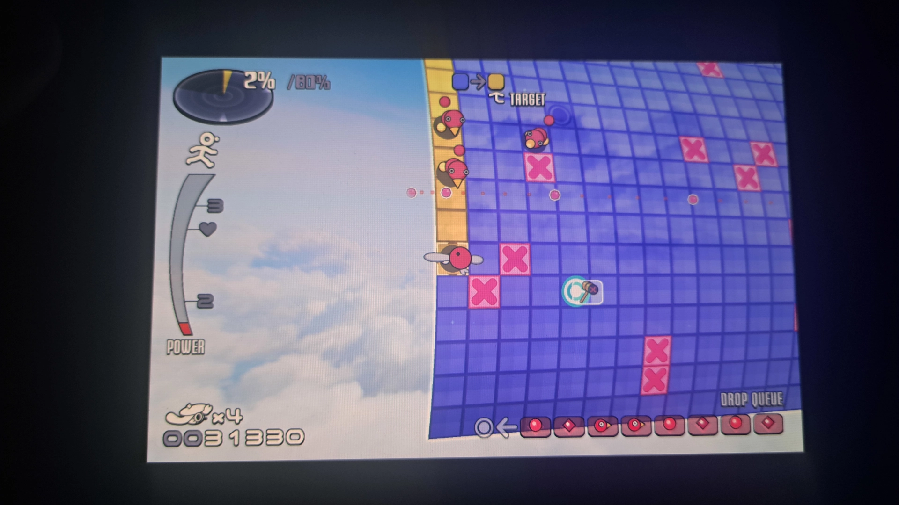
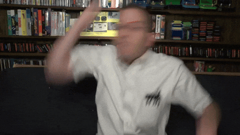

Yesterday there was a major power cut in my area with more than tens of thousands of households being affected.
Well... no big deal, right? I mean, at the time of the power cut i was working on something in clip studio paint and i did lose like 25 minutes of work which definitely sucked ! But hey, at least i didn't lose any other important files or anything like that, so the outcome could have been much much worse !
So, what to do when the power goes out?
Well... fear not, my friend ! I've prepared a list of fun things i did during the power cut, which may come in handy for you in the future ! (or... maybe not i duno)
Although Steam may be an online platform, as long as you have all of the games you want to play installed on your device, you can still (thankfully) access them offline !
I've spent some time during the power cut playing Orbo's Odyssey and Vividlope on my Steam Deck ! Fast-paced games and arcade-style puzzle games seem to work quite well on the Steam Deck ! But like DUDE THESE TWO GAMES RUUULLE ! So here's my personal recommendation for these two games !
Orbo's Odyssey and Vividlope rock !
Power cut gaming !
Sleeping is basically like a fast forward button for life ! When you want time to go by quicker, just take a nap ! So that's what i did ! And no, i didn't dream of anything sadly. At least... i think? I actually can't really tell...
Perhaps i should start keeping a dream diary. That would actually be pretty cool to be honest !
The power cut took place in the afternoon, meaning it was already starting to get dark outside and as an added bonus, it actually started snowing that evening !
And HOLY HELL that really was quite a surreal experience ! All of the street lamps have gone dark, there were little to no cars driving around the area and the snow just enhanced the atmosphere a lot !
I love Luigi's Mansion ! One of the best games for the GameCube and one of my all time favourite games ever ! One thing i absolutely hate about this game however is the part with the power cut !
The part with the power cut sucks fucking ass ! Running around the entire mansion, while every few steps you take, more ghosts than usual gang up on you to the point where it doesn't even make sense anymore to suck them all up, isn't fun whatsoever !!
I'd rather have a buffalo take diarrhea dump in my ear ! What were they thinking ???!!!
This blog entry doesn't have any deep meaning ! I just wanted to vent out my frustration about the fact, that i didn't have any power for basically the rest of the day after coming home from work yesterday and that i lost 25 minutes of work in clip studio paint !
Although if there is something you could take away from this experience:
We humans are absolutely SCREWED without power nowerdays !
And there's... probably, absolutely and definitely nothing we can do about it !... O_o
Oh yea and play Orbo's Odyssey, Vividlope and Luigi's Mansion ! Wonderful games !